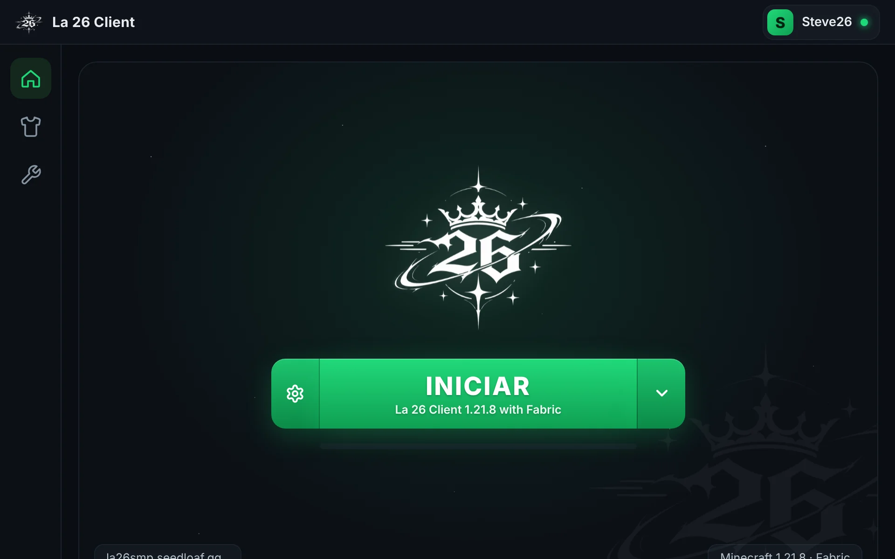
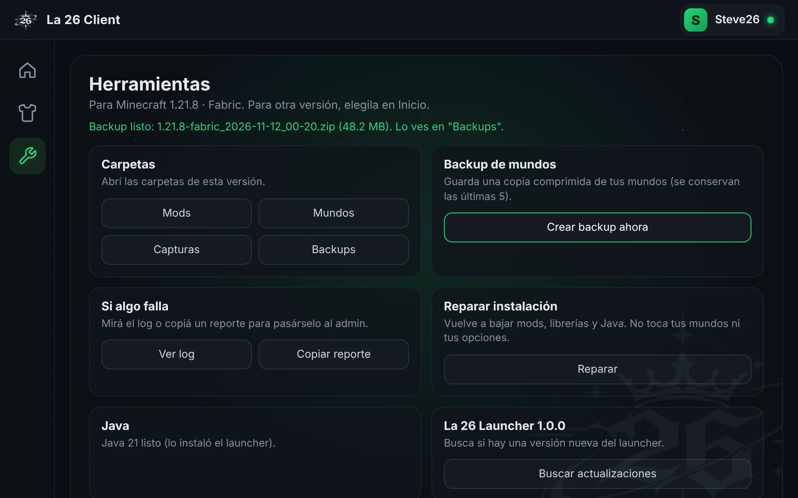

LA 26 CLIENT
El launcher y el server de la comunidad. Descargalo, abrilo y estás adentro.

Entrá al server con un clic
El launcher prepara todo y te deja adentro, sin pasar por el menú de Minecraft.
- Mods al día
- Los mods del server y los de rendimiento se bajan y se actualizan solos antes de cada partida.
- Premium o con nick
- Entrá con tu cuenta de Microsoft o con un nick. Con cuenta de Microsoft, cambiás la skin desde el launcher.
- Se actualiza solo
- Cuando sale una versión nueva, el launcher la descarga y se reinicia. No tenés que volver a esta página.

Y si algo falla, lo arreglás vos
La pestaña Herramientas junta lo que antes se resolvía pidiendo ayuda en el chat.
- Reparar
- Vuelve a bajar mods, librerías y Java sin tocar tus mundos ni tus opciones.
- Backup de mundos
- Guarda una copia comprimida de tus mundos con un botón. Se conservan las últimas cinco.
- Reporte de errores
- Copiás el log junto con tu versión y tu sistema, y se lo pasás al staff.
Empezá en tres pasos
-
Descargá el launcher
Es un solo archivo,
DescargarLa26-Launcher.exe. No se instala nada más. -
Abrilo
Si Windows muestra “Windows protegió su PC”, tocá Más información y después Ejecutar de todas formas. Pasa con los programas nuevos que todavía no tienen firma.
-
Elegí tu cuenta y tocá Iniciar
Con tu cuenta de Microsoft o con un nick. La primera vez tarda un poco porque baja el juego y los mods.
Creators
Patrocinadores
Patrocinador oficial
Stake
Solo para mayores de 18 años. Jugá con responsabilidad.
Tu marca acá
Hablá con el staff en el server.